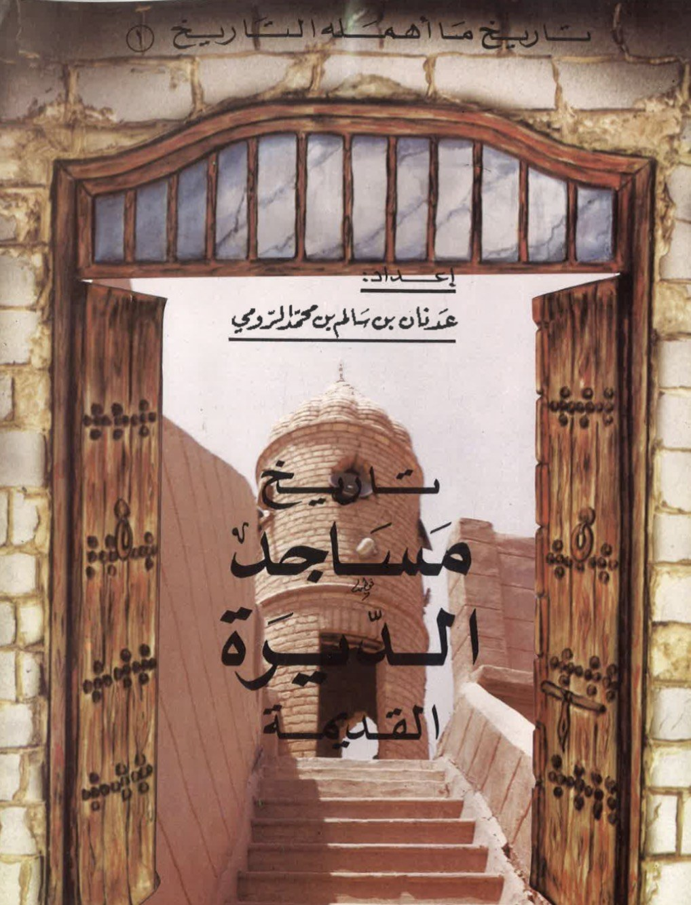
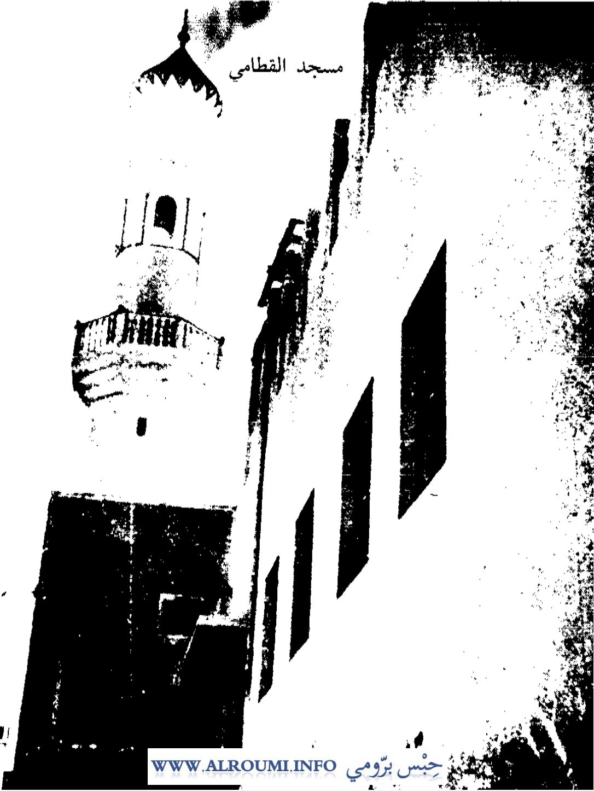

كتاب عن مساجد الديرة القديمة، قبل طبعته الثانية سنة ٢٠٠٢ · صفحات من كتاب «تاريخ مساجد الديرة القديمة»، إعداد عدنان بن سالم بن محمد الرومي، سلسلة «تاريخ ما أهمله التاريخ» (١)
مسجد القطامي، وسُمي بقربه من منزل عبدالعزيز القطامي، في «تاريخ مساجد الديرة القديمة» لعدنان الرومي
ما هي
مدخل «مسجد القطامي» (ص ٤١ إلى ٤٥): «إسم المسجد: ملكة بنت محمد الغانم. إسم الشهرة: بن قطامي، وذلك لقربه من منزل عبدالعزيز القطامي فأطلق عليه اسم مسجد القطامي». «موقعه قديما: يقع في حي الشرق، في فريج الشملان (أو الرومي) بين فريج بوقماز وفريج العسعوسي، خلف عمارة الرومي وبقربه منزل عبدالعزيز القطامي». وموقعه حديثا قرب وزارة الصحة العامة وديوان الشملان مطلا على شارع الخليج، ولا يزال موجودا. «أسسته ملكة بنت محمد الجبر الغانم بقرب منزلها كي يتسنى لزوجها محمد بن صقر بن غانم بن جبر الغانم الصلاة فيه» بعدما زاد وزنه، وذكر النبهاني أن مؤسسه سلطان بن ماجد. «أسس عام ١٢٥٠هـ الموافق (١٨٣٤م)». وجددته دائرة الأوقاف العامة بتكاليف بلغت ٦٦٩٢٤ روبية، في ١٠ ذي الحجة ١٣٧٢هـ الموافق ٢٠ أغسطس ١٩٥٣م. وأئمته: ملا محمد بن حسين بن عبدالله التركيت، ثم ابنه الشيخ محمد صالح بن محمد التركيت، ثم الشيخ محمد بن محمد صالح التركيت، ثم مبارك بن بشر بن يوسف الرومي، ومن مؤذنيه سلطان بورسلي. وكان العلماء الذين يأتون شملان بن علي بن سيف الرومي يلقون الدروس فيه. «لقد أوقفت السيدة ملكة بنت محمد الجبر على المسجد منزلين»، أحدهما مدرسة لتحفيظ القرآن والآخر سكن فيه الشيخ محمد بن حسين التركيت وابنه، «كما قامت ملكة بخدمة المسجد طوال حياتها وتابعها بالخدمة من بعدها أولادها». وفي لوحة صورة المسجد ومنارته.
أهميتها
أوفى ما نشر عن مسجد العائلة: يذكر أن المسجد أخذ اسم القطامي من منزل عبدالعزيز القطامي المجاور له، ويوثق تأسيسه وتجديده وأئمته ووقفه.
صور الصفحات


ملاحظات
نعرض هنا الصفحات الأولى فقط، ويرى أفراد العائلة بعد تسجيل الدخول كل الصفحات وعددها 7.
أسماء أخرى
المصادر
عدنان بن سالم بن محمد الرومي، تاريخ مساجد الديرة القديمة (تاريخ ما أهمله التاريخ ١)، ص ٤١ إلى ٤٥ ولوحة مسجد القطامي؛ الصور من موقع alroumi.info
كيف كُتب هذا النص: لا تظهر الطبعة وسنة النشر في الصفحات المرسلة، ويحيل الجزء السابع من «معالم مدينة الكويت القديمة» إلى طبعة ثانية سنة ٢٠٠٢، ويحيل العويد إلى الصفحة ١٩٢، فأرقام الصفحات تختلف بين الطبعات. ولا يحدد الكتاب أي عبدالعزيز القطامي كان صاحب المنزل.
افتح في الموقع التفاعلي